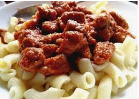

Hasitasi Étterem
Jó étvágyat kívánunk!
Áraink forintba értendőek!
- Hétfő
- Okt. 25
- Sóskaleves csurgatott tojással
- Sült oldalas hagymás törtburgonyával, párolt káposztával

- Kedd
- Okt. 26
- Húsleves cérnametélttel
- Sertéspörkölt kagylótésztával, céklával
- Kosárba

- Szerda
- Okt. 27
- Paradicsomleves kiskocka tésztával
- Óvári csirkemell rizi - bizivel
- Csütörtök
- Okt. 28
- Marhagulyás
- Somlói galuska
- Péntek
- Okt. 29
- Sóskaleves csurgatott tojással
- Hagymás rostélyos mangalica tarjával
- Szombat
- Okt. 30
- Csak helyben fogyasztás
- Vasárnap
- Okt. 31
- Zárva